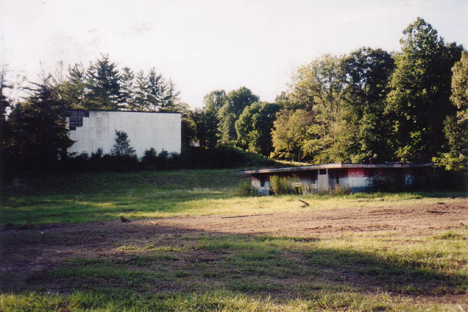
This one ranks right up there with the Heath for drive-in coolness. Almost entirely forgotten in its wooded corner, it is rotting slowly, but in a distinguished manner, almost untouched by the heavy vandalism you see in more urban ruins. With the blank and empty sign frames overgrown the way they are, you wouldn't know it was here if you didn't, well, know it was here.
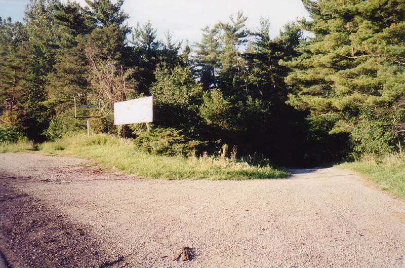
Once you find it, on Route 13 outside New Lexington (as I managed to do in September 2003), you follow the old driveway down a fairly steep decline. One thing that's conspicuously absent is the ticket booth; whether it was at the top of the hill or the bottom of the hill, it's gone now. It's easy to imagine cars backed up on this inclined driveway back in the days when films still played here, waiting to get a spot. There are even a few old fixtures at tire level on the way down--lights, maybe, or illuminated signs telling you to kill your headlights.
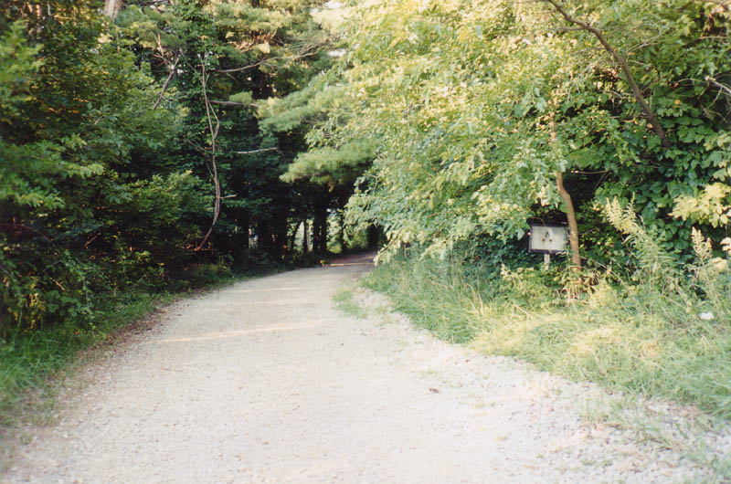
The way the Skyline is set up is really unique. Taking advantage of the hilly contours of southeastern Ohio, the founders built their drive-in into a natural depression. The embankment which slopes steeply up to the road was used as the foundation and backing for the screen; cars passing on the highway were just about level with the middle of the picture, which must have cut way down on headlight glare from the road. As a matter of fact, the picture must have been fantastic on clear summer nights, since even the meager lights of New Lexington are thoroughly blocked by the tree cover on all four sides.
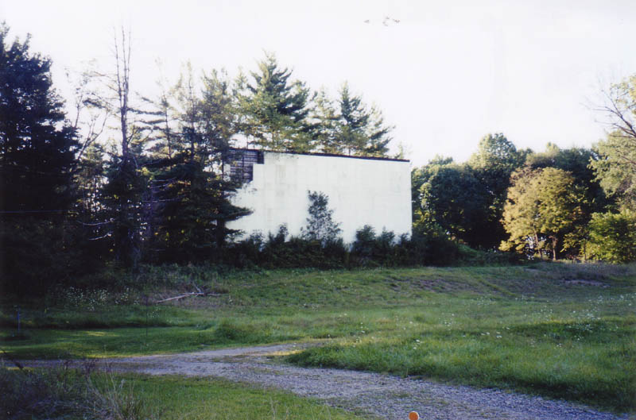
The screen is not in great shape, but I have seen worse. At least it's still there. Most drive-in screens are very susceptible to weather (especially high winds) and gravity, but since this one has the advantage of being supported from behind, it's done well. It is starting to crumble in the top left corner, though, as you can tell. Trees and bushes have grown up to block the view.
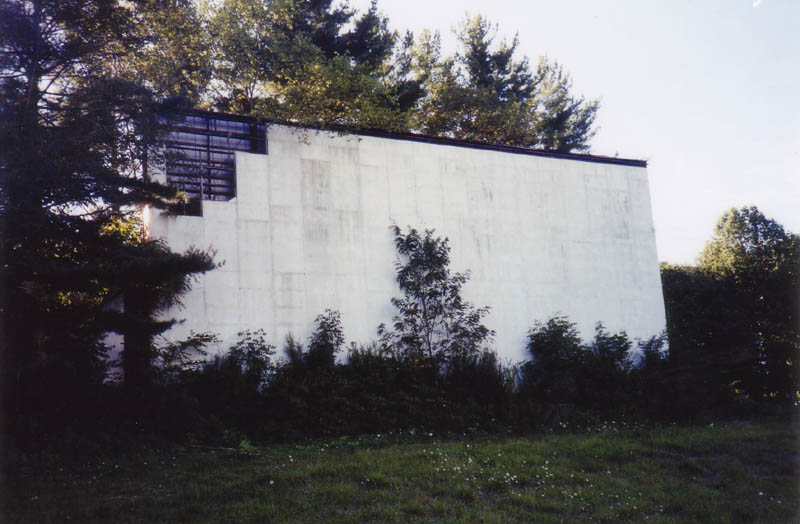
One reason why I say that the Skyline is truly forgotten in its little corner is that the concession stand, which has obviously been abandoned since the theater closed, stands unlocked and unguarded, but has not been stripped or seriously trashed. It's an unfortunate fact that certain people--adolescents or people with brains stunted at adolescence--like to destroy cool places like this.
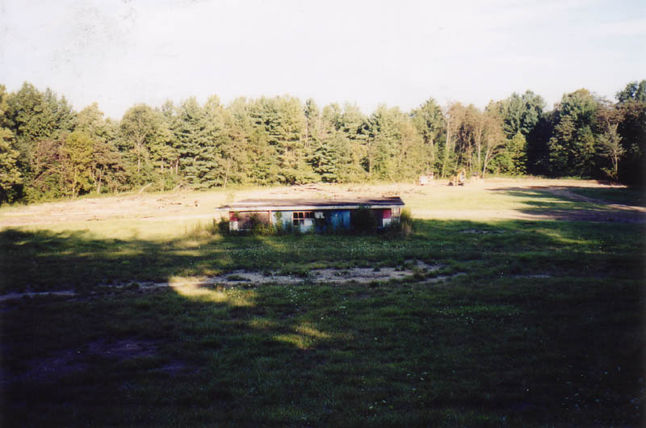
But, against all logic, we have the Skyline Drive-In's concession stand. From the outside it doesn't look like much--a flat, single-story structure like so many others.
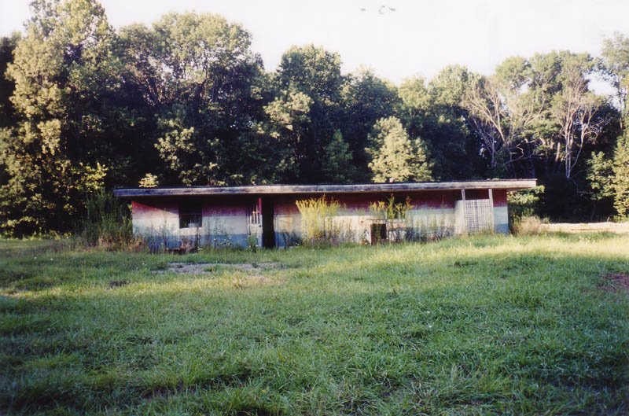
Which is not to say that it's pristine inside; it's just that there are a lot of things left hanging on the walls, and many pieces of related junk left piled inside. Any collector of drive-in Americana would be ecstatic to find this place.
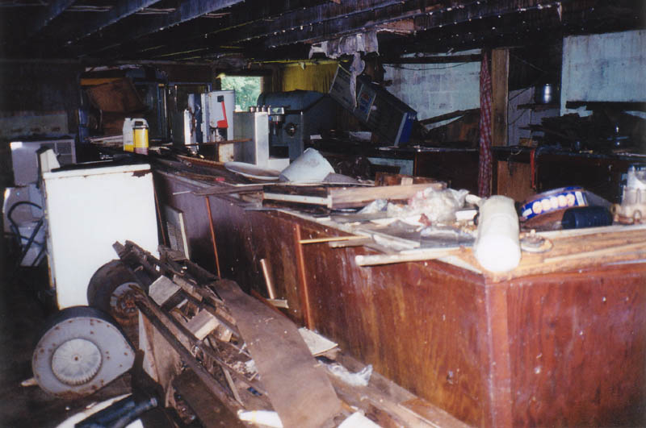
In accordance with international Drive-In Concession Stand regulations, the arrangement had customers coming in one door, buying food from a long showcase like the a la carte line in high school, and going out the opposite door. This one was L-shaped, and had a wooden counter for you to slide a nacho tray down. Things like this make me hungry for salted pretzel bites with cheese.
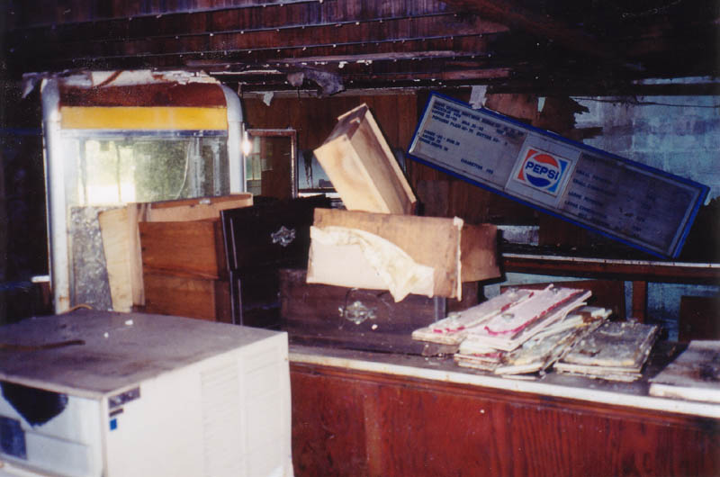
Behind the counter, next to the popcorn machine, is the price list, presented by Pepsi. It's hard to read in this photo but for your shopping convenience I've copied it out as follows:
PEPSI . ORANGE . ROOT BEER . BUBBLE . 25 75 100
MOUNTAIN DEW . DIET PEPSI
COFFEE . 30 - 50 . MILK . 30-50
POPCORN PLAIN . 30 - 75 . BUTTER . 50 -
CANDY - 35 . - . GUM 25
ASPRIN [SIC] 75
COUGH DROPS 30
CIGARETTES 100
PIZZA
SMALL PEPPERONI . 350
SMALL COMBINATION . 500
LARGE PEPPERONI . 675
LARGE COMBINATION . 800
The early-80s prices are a little hard to believe--especially the dollar cigarettes. And aren't movie theater prices always a ripoff?
Below is the condiment shelf, with places for mustard, ketchup, relish, and onions, along with a cool retro sign for popcorn.
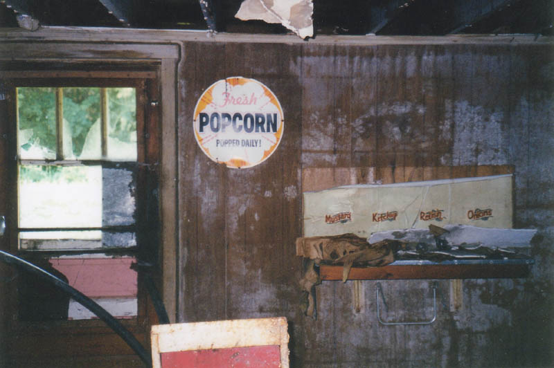
But the coolest thing in the concession building was the projection booth at the front. This is why I say nobody has seriously vandalized the place; there's still projection equipment here--including two projectors, believe it or not--and there are film strips dangling all over the place. I took some along with me, and although the rolls were water damaged, you can still see the individual frames of the cartoon bits that ran before the show and during intermission--things like the WELCOME TO OUR DRIVE-IN THEATER and VISIT OUR CONCESSION STAND.
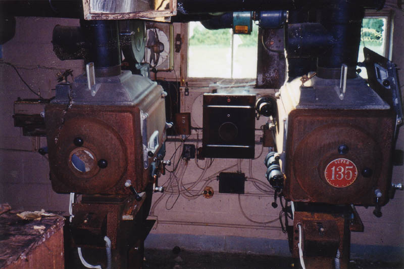
Yes, the projectors are still there. They're rusty but solid, with the little glass-front panel doors, cooling fans, and lenses. I doubt you could get them to work at this point, but it's still crazy to find once-expensive equipment like this in an abandoned place.
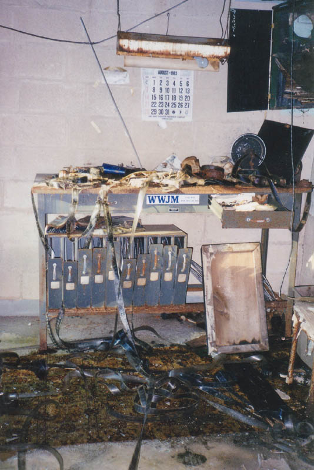
Here's a table in the projection room with a numbered reel rack underneath. Scrap film is all over the place. But the most helpful thing in this picture is definitely the calendar. What better way could there possibly be to tell when the place closed down? I just wonder how it managed to stay on the wall for twenty years. If every abandoned building I broke into had a calendar conveniently tacked to a wall, doing this website would be much, much easier.
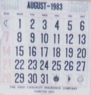
August 1983. An early end to the summer season, but late enough that they were able to show some of that year's movies, and right at the point when everybody was going back to school for the '83-'84 year. I was four years old at this point, so I don't really remember it. If you went to the drive-in that summer you might have seen one of these movies:
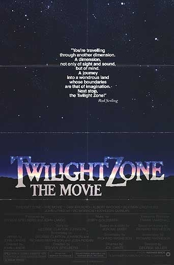
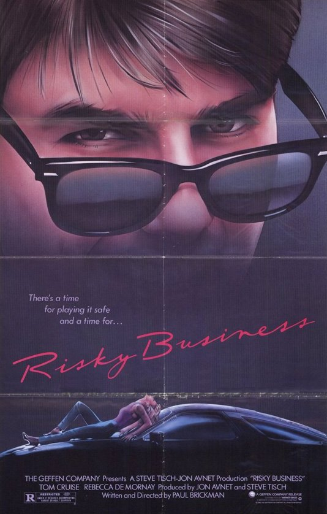
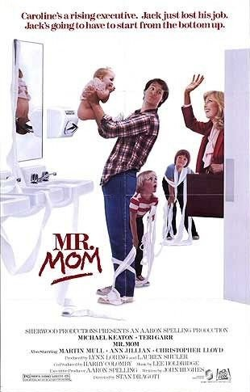
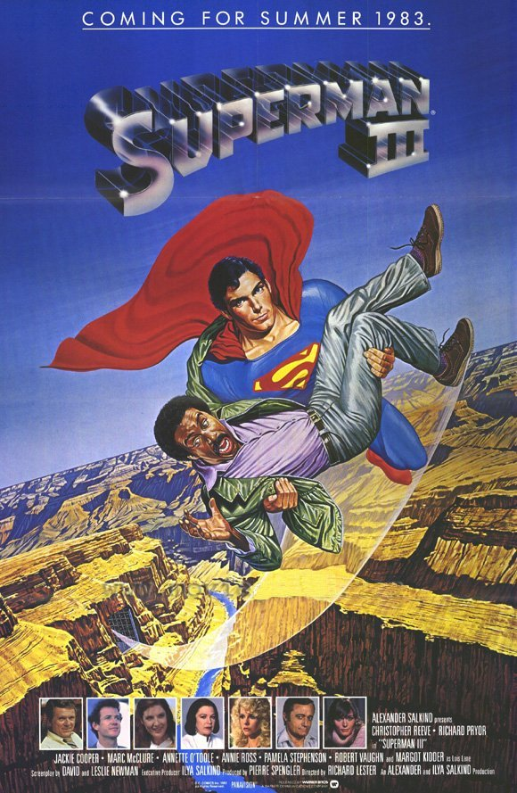
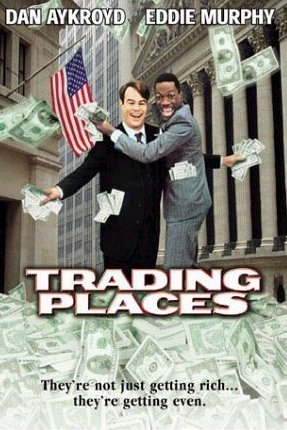
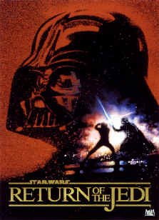
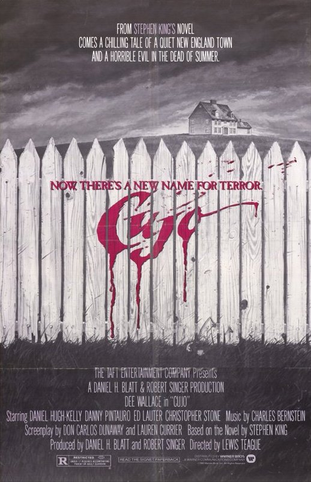
The daughter of the original proprietors wrote me and filled in a lot of the blanks about how this theater operated. She says:
"It was my father and his brothers who built, owned and operated this drive in until it closed. I used to work in the concession stand on the weekends, peeling potatoes for french fries. I hated that job! Once I was older, I was allowed to wait on customers along with my sister and other members of my family.
"Looking at the pictures and reading your inserts has made me quite nostalgic and homesick. I can remember when the cars were lined up to the road and on movies such as The Shaggy Dog and other Disney movies, some cars had to be turned away. The drive in would fill up quickly for certain movies. The ticket booth by the way was at the bottom of the hill.
"There were two rooms on the inside of the concession stand, one on either side of the projector room, which had chairs in them. People were allowed to come in the building to watch the movie if they wanted to. These rooms would fill up with mostly kids while their parents enjoyed the movie in their car. There was also a bench at the bottom of the screen, where again mostly young people would sit “under the stars” and watch the movie."
In a little town like New Lexington, there's not a lot to do for entertainment. If I'm not mistaken, the people here have to drive to Nelsonville or Lancaster to see a movie. So it seems like a real shame that an old style one-screen drive-in like this one would go out of business. Although it was in incredible shape when I visited, there seemed to be some construction underway at the back of the lot, so it might be lost before much longer. As always, if you're familiar with this drive-in, please send me an e-mail and tell me about it.
UPDATE: As of 2006, construction on a new road has taken out a section at the back of the drive-in lot. The rest, quite fortunately, still stands.
In other good news, a reader named Tim writes: "I am actually trying to buy this drive-in and reopen it....cross your fingures." If this pans out, rest assured that I will make an announcement, and hopefully arrange a get-together celebration for the theater's resurrection day.
Ohio's Forgotten Drive-Ins
40 East Twin Drive-In
The Heath Drive-In
Hocking Theater Drive-In
Kingman Drive-In Theater
The Lake Drive-In
The Leatherwood Drive-In
The Linden Air Drive-In
The Show Boat Drive-In
The Skyline Drive-In
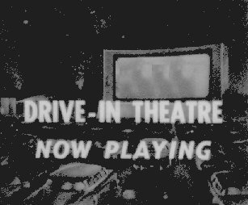
Back
forgottenohio@yahoo.com